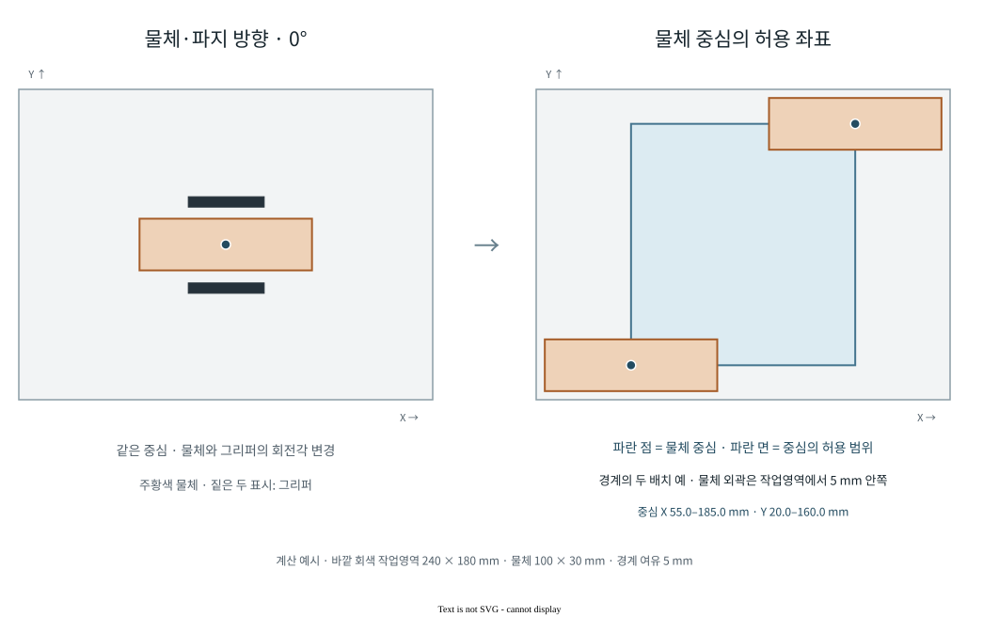
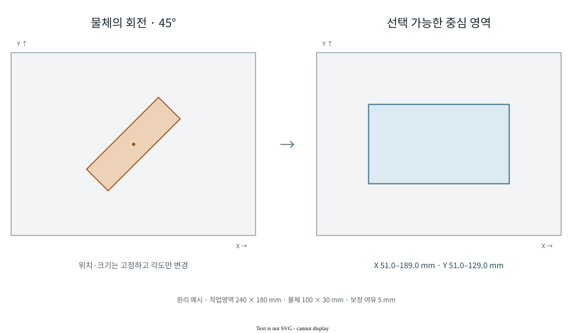
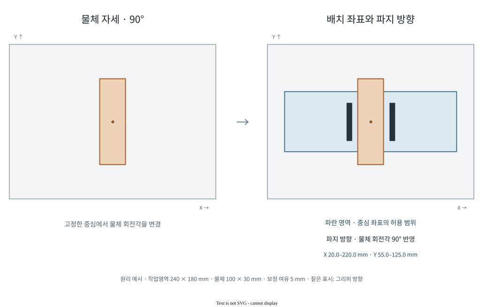

로봇 시연 수집
Collection Operator
작업 위치와 물체 각도, 시작 자세와 횟수를 정해 시연 데이터를 수집하는 시스템이다. Collection Operator에서 계획을 작성하면 OneJob이 Motion Executor와 Recorder를 조율해 작업을 수행하고 결과를 저장한다.
실제 로봇 수집
나무 큐브 집기
로봇의 집기 동작을 두 시야에서 함께 기록한 영상이다. 작업영역을 보는 고정 카메라와 그리퍼 주변을 보는 손목 카메라를 같은 시간축에 놓았다. 이 시연은 아래의 저장 관측과 정책 예측 비교로 이어진다.
수집 기록에서 평가 입력으로
수집 실행 결과와 저장 위치는 한 번의 시연 단위로 연결된다. 이 기록은 기술 검사를 통과했으며, 이후 SmolVLA 비교 실험의 개발용 평가에 사용됐다. 학습용 데이터와 TRAIN 정규화 통계에서는 제외했다.
수집 운영 화면
실제 제품 · FAKE 모드 실행 예시작업·물체·동작 설정과 수집 위치, 각도, 횟수를 선택한다. 자동 선택과 직접 입력은 같은 작업 계획에 반영된다.

수집 조건 설계
위치·각도·시작 자세
같은 위치·각도에서만 반복한 시연은 수집 조건이 한쪽에 몰린다. Collection Operator는 물체 위치·각도와 로봇 시작 자세를 따로 지정하고, 수집 전에 회차별 조건과 순서를 계획으로 고정한다. 어떤 조건에서 만든 데이터인지 재현할 수 있도록 하는 설계이다.
작업 조건 선택
물체·잡기 방식·동작·카메라 등 등록된 설정에서 실행할 조합을 고른다. 작업영역을 바꾸면 해당 좌표계와 호환 설정을 함께 적용한다.
유한한 실행 계획
수집 횟수와 각 작업의 위치·각도·시작 자세를 실행 순서로 고정한다. 설정을 바꾸면 수정한 내용으로 새 계획을 만든다.
반복 수집
한 번에 하나의 작업을 실행하고 저장·기술 검사가 끝나면 다음 작업으로 진행한다. 수집 완료 후에는 기존 설정으로 새 계획을 작성할 수 있다.
작업영역을 나누는 층화 표본화
시연을 같은 위치에서 반복하면 데이터가 그 주변에 몰린다. 수집기는 작업영역을 X·Y 방향의 격자로 나누고, 각 칸 안에서 물체 위치를 뽑는다. 회전각도 구간으로 나누어 배정한다. 한 차례 수집을 마치면 위치와 각도의 조합을 회전시켜 특정 위치에 같은 각도만 배정되는 편향을 줄인다.
예를 들어 5 × 3 위치 분할과 세 각도 구간을 쓰면 한 순회는 15개 위치 칸을 다룬다. 다음 순회에서는 각 칸의 각도 구간이 바뀐다. 분할 수는 설정값이며, 같은 seed와 계획으로 선택한 조건을 재현할 수 있다.
물체 회전각을 반영한 배치와 파지
물체의 회전각은 배치 가능한 중심 좌표와 로봇의 파지 자세에 함께 반영된다. 좌표 계산은 물체 외곽과 작업영역 사이의 여유를 확보하는 과정이다. 파지 자세 계산은 회전한 물체에 맞춰 그리퍼의 방향을 정하는 과정이다.



영역 축소와 균일 표본화의 계산 원리
작업영역의 각 변을 물체 외곽과 보정 여유만큼 안쪽으로 이동한다. 회전한 물체가 해당 변 방향으로 차지하는 폭을 사용하므로 각도에 따라 줄어드는 거리가 달라진다.
이 영역과 격자 칸이 겹치는 다각형에서 좌표를 고른다. 다각형을 삼각형으로 나누고 면적에 비례해 선택해, 작은 삼각형에 표본이 과도하게 몰리지 않도록 한다. 이 계산은 물체 배치 조건이며 로봇의 도달성·충돌 검사는 실행 경로에서 별도로 수행한다.
상부에서 위치·회전 정렬 후 수직 접근
TWO_STAGE_ALIGN_V2는 먼저 기준 관측 자세로 이동하고, 물체 위의 여유 높이에서 XY 위치와 회전 방향을 정렬한 뒤 내려가는 방식이다. 정렬 단계와 최종 접근 단계는 같은 목표 회전 행렬을 사용한다.
목표 파지 자세는 작업영역의 보정 좌표계, 물체의 위치·회전각, 파지 프로필의 기준 자세를 합성해 계산한다. 물체 회전각이 바뀌면 이 합성 결과와 그리퍼의 목표 방향도 함께 바뀐다.
회전각·파지 자세·정렬 동작 구현 ↗상태공간 설계와 실행 모듈
유한 상태공간 설계 프로필이 있는 조합에서는 X·Y 분할과 yaw 구간을 바탕으로 조건을 표본화한다. 물체 크기와 보정 여유를 반영한 작업영역 안에서 좌표를 생성한다. 위 기본 FAKE 화면의 조합에는 이 프로필이 없어 상태공간 설계 기능의 실행 예시로 사용하지 않는다.
조건 생성 모듈 ↗ · 작업 계획과 캠페인 관리 ↗작업과 학습 데이터
작업별 기록 구간
학습할 작업에 따라 기록 종료 시점을 다르게 적용한다. 집기는 들어 올리기까지, 옮기기는 목적지에 놓고 후퇴하기까지 저장한다. 다음 작업을 위한 재배치와 HOME 복귀는 학습 데이터에 포함하지 않는다.

Motion Executor는 로봇의 현재 작업을 관리하고, Recorder는 저장할 구간을 관리한다. 두 상태를 분리해 화면에 표시하므로 로봇이 복귀 중이어도 작업 데이터의 기록은 이미 끝날 수 있다.
작업 정의와 단계별 구현
기본 작업 정의는 집기 5개, 옮기기 9개의 기록 단계를 가진다. 세부 접근 경로는 선택한 동작 변형에 따라 달라질 수 있다. 실제 데이터의 시간 정렬은 기록기의 ROS 시각을 기준으로 수행한다.
실제 작업 정의 ↗ · 작업 실행·기록 종료 처리 ↗관련 시스템
저장되는 데이터Recorder · Curator
작업 중 수집한 영상·상태의 동기화와 변환 후보 검토.
시스템 아키텍처
데이터와 정책의 분석이 다음 수집 조건으로 돌아오는 폐루프 구조.